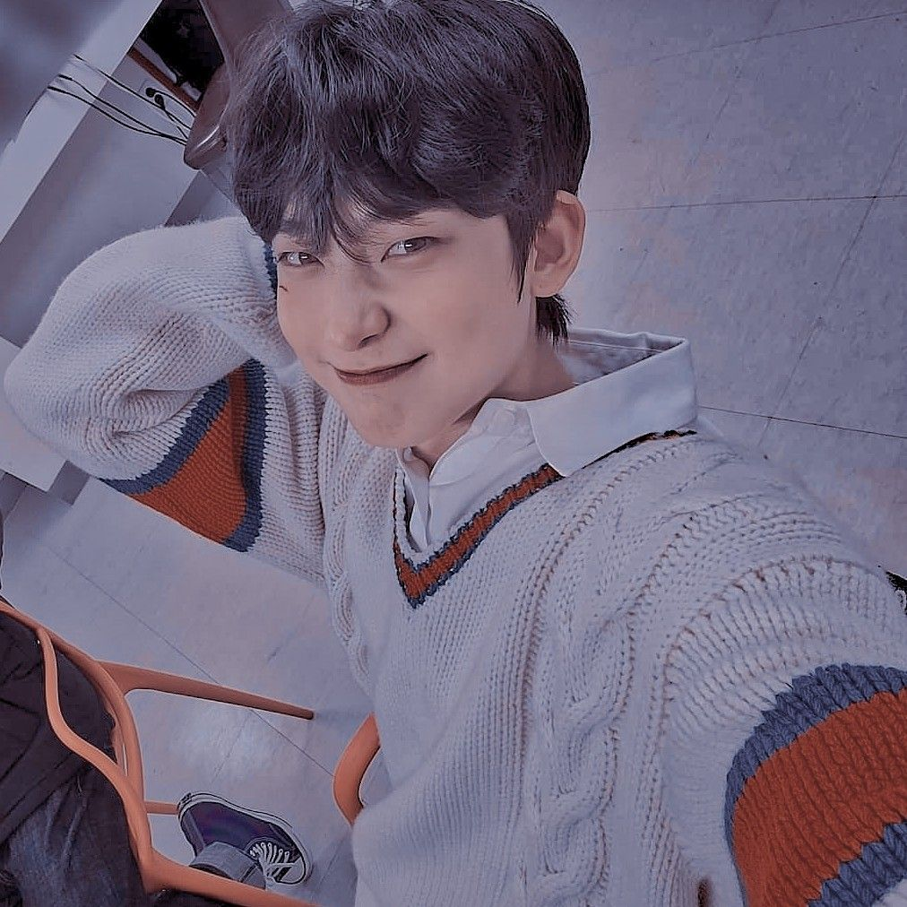

∴∵∴ ୨୧ ∴∵∴

— [♡] ;DANÇAR
Dançar sempre foi algo que eu também sempre gostei de fazer.
Antes da pandemia, em 2019 eu até tinha um grupo de dance cover com mais 3 amigos,
mas, infelizmente nunca chegamos a nos apresentar já que apenas nos encontrávamos na escola,
que era o único ponto em comum que tinhamos,
já que todas moravam bem distante umas das outras. Quando começou a quarentena,
pensei que teria mais tempo para dançar, e com certeza tive mas, não tenho feito isso com frequência
por mais que seja um sonho pra mim a ser realizado.
Ainda espero poder focar muito na dança assim como foco nos desenhos!
Como eu não tenho nenhum vídeo meu dançando, vou deixar aqui um
cover de uma das minhas dancers preferias!
É uma coreografia que eu aprendi durante a quarentena!
∴∵∴ ୨୧ ∴∵∴